Skip to content
thoughtloom
Where ideas take shape.
Explore
Capture
Settings
Reserved

Capture
Import
Write or paste a thought.
Thought
I can lose an idea by trying to finish it too soon. I want a place to keep the rough version, then return when I have something to add.
Title
(optional)
Save
Thought
Title
Keep room for unfinished thinking
Open idea
Capture another thought